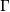
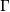

numpy.random.RandomState.gamma¶
- RandomState.gamma(shape, scale=1.0, size=None)¶
Draw samples from a Gamma distribution.
Samples are drawn from a Gamma distribution with specified parameters, shape (sometimes designated “k”) and scale (sometimes designated “theta”), where both parameters are > 0.
Parameters : shape : scalar > 0
The shape of the gamma distribution.
scale : scalar > 0, optional
The scale of the gamma distribution. Default is equal to 1.
size : shape_tuple, optional
Output shape. If the given shape is, e.g., (m, n, k), then m * n * k samples are drawn.
Returns : out : ndarray, float
Returns one sample unless size parameter is specified.
See also
- scipy.stats.distributions.gamma
- probability density function, distribution or cumulative density function, etc.
Notes
The probability density for the Gamma distribution is
where
 is the shape and
is the shape and  the scale,
and  is the Gamma function.
the scale,
and  is the Gamma function.The Gamma distribution is often used to model the times to failure of electronic components, and arises naturally in processes for which the waiting times between Poisson distributed events are relevant.
References
[R135] Weisstein, Eric W. “Gamma Distribution.” From MathWorld–A Wolfram Web Resource. http://mathworld.wolfram.com/GammaDistribution.html [R136] Wikipedia, “Gamma-distribution”, http://en.wikipedia.org/wiki/Gamma-distribution Examples
Draw samples from the distribution:
>>> shape, scale = 2., 2. # mean and dispersion >>> s = np.random.gamma(shape, scale, 1000)
Display the histogram of the samples, along with the probability density function:
>>> import matplotlib.pyplot as plt >>> import scipy.special as sps >>> count, bins, ignored = plt.hist(s, 50, normed=True) >>> y = bins**(shape-1)*(np.exp(-bins/scale) / ... (sps.gamma(shape)*scale**shape)) >>> plt.plot(bins, y, linewidth=2, color='r') >>> plt.show()
(Source code, png, pdf)
{kind=link}